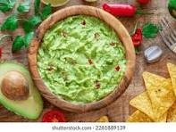

Ingredients
- 3 ripe avocados
- 1 small onion, finely chopped
- 2 tomatoes, diced
- 1 lime, juiced
- 2 cloves garlic, minced
- Salt and pepper to taste
- 2 tablespoons chopped fresh cilantro (optional)
Instructions
- Cut avocados in half, remove the pit, and scoop the flesh into a bowl.
- Mash the avocado with a fork until smooth but still chunky.
- Add onion, tomatoes, lime juice, garlic, salt, and pepper. Mix well.
- Add cilantro if using, and stir to combine.
- Serve immediately with tortilla chips or as a topping for other dishes.
Nutritional Information
Calories: 150 per serving
Protein: 2g
Carbohydrates: 12g
Fat: 12g